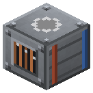

Парогенератор АЭС


Горячий хладагент жидкостного реактора IC2 + вода -> пар Railcraft + остывший хладагент обратно в реактор.
Горячий хладагент жидкостного реактора IC2 + вода -> пар Railcraft + остывший хладагент обратно в реактор. Пар уходит вверх, хладагент вниз.
Параметры
| Эпоха | 5 — Атом и космос |
|---|---|
| Многоблок | нет |
| Привод | топка / своё |
| Баки, mB | 8000, 8000, 8000, 32000 |
| что делает | второй контур: горячий хладагент реактора IC2 греет воду |
| энергия на входе | тепло реактора IC2 (хладагент) |
| на выходе | пар |
| из чего | стальные листы, теплопроводники IC2, железные жидкостные трубы BC, бак BC |
Кто кормит
- water ← Артезианская скважина
Кого кормит
- steam → Паровой автоклав, Паровой патронный пресс, Химический реактор, Контактный аппарат, Выпарной аппарат, Скважина Фраша, Реактор высокого давления, Свинцовая камера, Атмосферная колонна (печь Шухова), Нефтяная скважина, Солеварня, Паровой молот, Ступица паровой турбины, Артезианская скважина
Как устроено (из кода)
Парогенератор АЭС (второй контур): горячий хладагент жидкостного реактора IC2 греет воду через стенку трубок. Хладагент остывает и идёт обратно в реактор, вода становится паром Railcraft - для паровых машин, турбин, выпарки. Электричества по дороге нет: тепло реактора сразу в пар (в обход теплообменника и парогенератора IC2). Партия: HOT mB горячего хладагента + вода -> HOT mB хладагента + HOT * steamPerHot mB пара за TIME тиков. Воды - пар / 160 (как у котлов Railcraft). Пар уходит ВВЕРХ (труба, машина, бак над аппаратом), остывший хладагент - ВНИЗ. Трубы и насосы могут и сами забирать. Баки: 0 горячий хладагент, 1 вода (вход), 2 хладагент, 3 пар (выход).